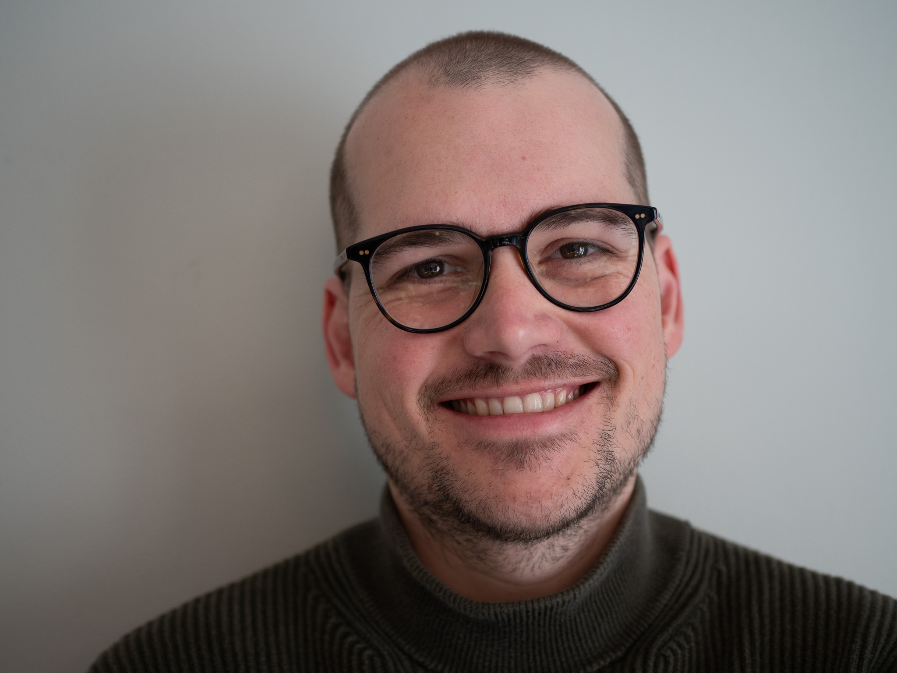

Address
Room 4628
Bob and Betty Beyster Building
2260 Hayward Street
Ann Arbor, MI 48109
maxsnew at umich.edu
About Me
I am a computer scientist working on the mathematical foundations of programming languages. I am an assistant professor in Computer Science & Engineering at the University of Michigan, part of our MPLSE research community.
My research utilizes mathematical techniques to help in design, analysis and implementation of programming languages. I am recently interested in interoperability between languages, especially in the guises of Gradual Typing and compiler intermediate languages supporting multiple source languages.
My research has been supported by grants from the AFOSR and NSF, including the NSF CAREER Award.
Previous Positions
I was a postdoc at Wesleyan University with Dan Licata from 2020-2021. I received a PhD in computer science from Northeastern University advised by Amal Ahmed in 2020. I received a M.S. from Northwestern University advised by Robby Findler in 2014.
Students
PhD students
- Eric Giovannini (2021-)
- Steven Schaefer (2023-)
- Eric Bond (2023-)
- Yuchen Jiang (2023-)
- Jesse Slater (2024-) (co-advised with Xinyu Wang)